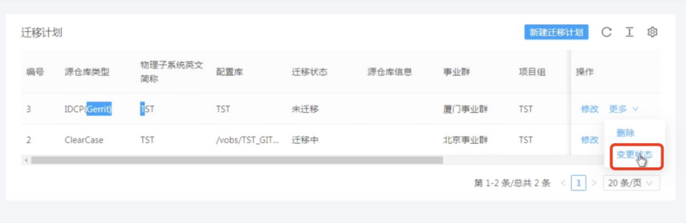
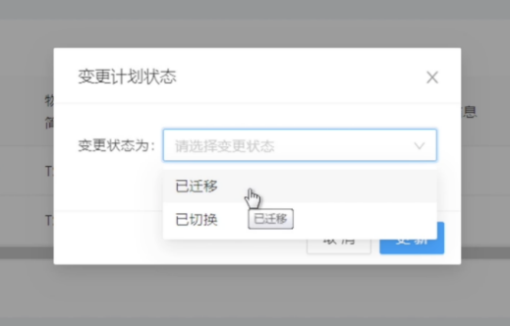
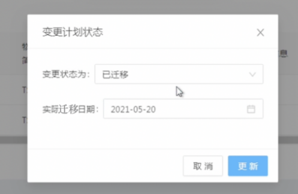

该功能的目的主要用于整体项目组迁移计划的跟踪，完成迁移和切换时，请务必在此进行更新。
在迁移计划主界面中，选择迁移计划，右侧操作栏的“更多”，然后点击“变更状态”链接，即可进行修改迁移状态的变更。
迁移状态变更中，可选择已迁移或者已切换，选择后需要天禧而实际的迁移日期。状态的维护都为手工维护，不是自动计算。如果当时状态为“迁移中“，是因为用户在该界面上执行了迁移任务，会自动变更为迁移中。如果已经变成已迁移，重新通过迁移任务执行增量迁移CC时，不会将已迁移变更为“迁移中”。
 